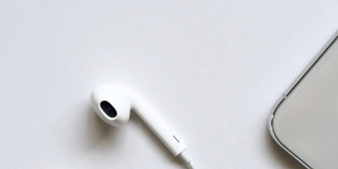
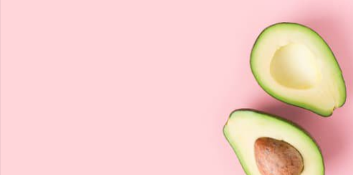

비지니스적으로 inSSa-it
는, 대한민국의 트렌드를 선도하는 대표적 SNS 인스타그램의 여러 정보 중에서도
'인싸', 즉 트랜드를 주도하는 인플루언서들의 장소 정보를
선택적으로 제공하고자 만들어진 웹서비스입니다.
inSSa-it는 여러 SNS 유저 가운데 인플루언서를 선별하기 위해
인스타그램 인플루언서의 패션정보 제공 전문 사이트 하트잇(heart.it)이
인스타그램에서 팔로우하는 약 180여개의 계정의 인플루언서들이 올린
수만 개 피드의 장소 정보에 기반하여 실시간 서비스를 제공합니다.
이들 인플루언서는 패션을 필두로 다방면에서 트렌드를 세팅하는 오피니언 리더 집단으로서
이들의 장소 정보는 향후 중단기적 마켓 트렌드를 예측하는데 있어
개인과 기업 모두에게 소중한 자료로 활용될 수 있습니다.
기술적으로 inSSa-it
는, 하트잇 계정이 팔로우하는 180여개 계정의 회원데이터 / 장소데이터 / 해쉬태그 정보를
Selenium을 이용하여 정기적으로 수집함으로써
인플루언서들이 공유하고 싶어하는 핫플레이스들을
실시간으로 만들어 제공해 드립니다.
저희가 제공하는 '인플루언서 핫플레이스 지도' 및 '나만의 지도' 등의 서비스는
카카오 지도 API에 기반하며, 다음 플레이스와 연동됩니다.

인싸이트의 핵심 서비스 1
inSSa-it가 제공하는 첫번재 서비스는
인플루언서들이 공유하고자 하는 핫플레이스를 지도로 제공하는 서비스입니다.
유저들은 이 서비스를 통해 관심지역 / 인플루언서들의 방문기간 / 장소 카테고리
등의 범주에 따라 희망하는 조건에 부합하는 장소들을 검색할 수 있습니다.
검색 결과를 클릭하시면 다음 플레이스 서비스와 연결되어
더욱 자세한 정보를 서비스 받으실 수 있습니다.

인싸이트의 핵심 서비스 2
inSSa-it가 제공하는두번재 서비스는
자신만의 스타일로 완성해 가는 핫플레이스 지도입니다.
인싸이트의 유저들은 인싸 핫플레이스 검색과 장소 저장을 통해
자신만의 스타일로 핫플레이스 지도를
완성할 수 있습니다.
인싸이트의 핵심 서비스 3
inSSa-it가 제공하는 세번재 서비스는
다양한 순위정보 제공 서비스입니다.
인플루언서들이 방문한 핫프레이스 장소 탑5,
인사이트 회원들이 자신의 핫플레이스로 검색한 장소 탑5,
저장한 장소 탑5 등의 랭킹을 제공하여
더욱 효과적으로 장소 트렌드를
확인하고 예측하실 수 있도록 도와드립니다.
❮
❯
인플루언서 핫플레이스 지도페이지로 이동">
나만의 핫플레이스 지도페이지로 이동">
각종 랭킹페이지로 이동">